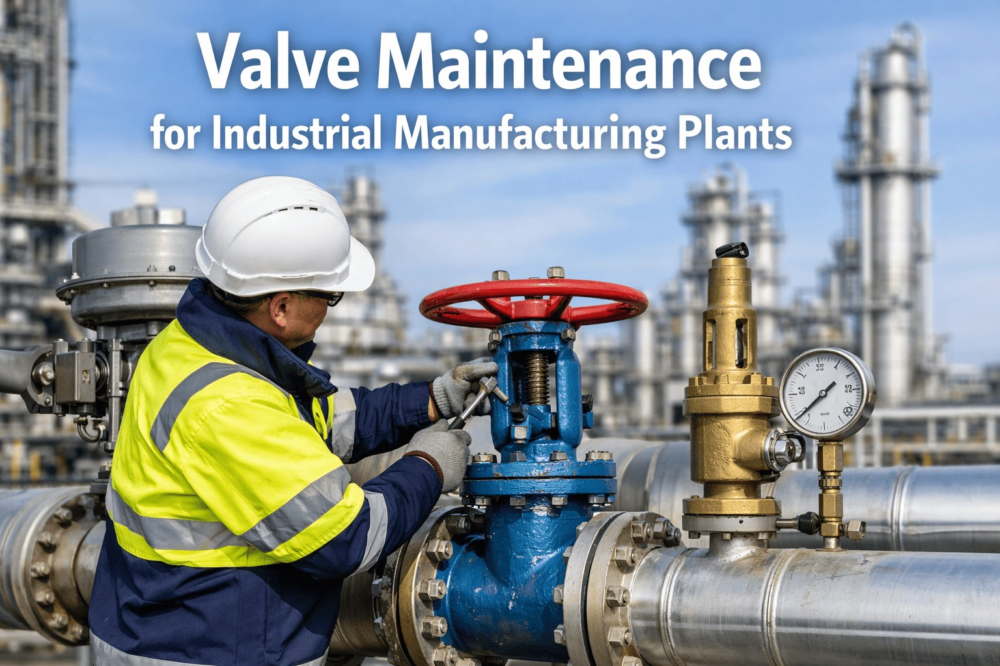
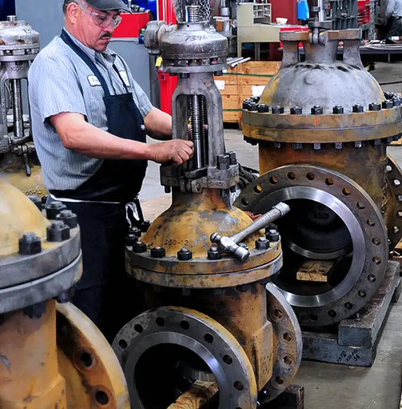
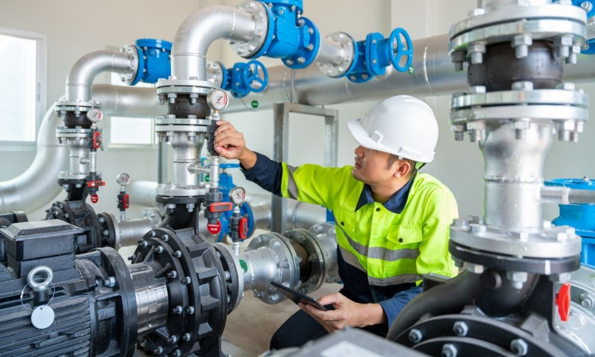
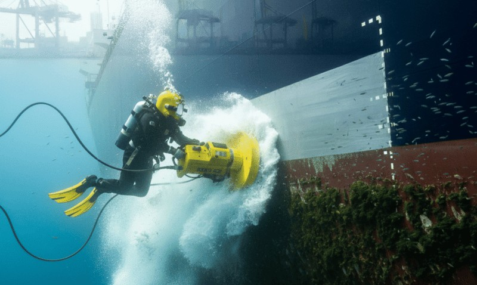
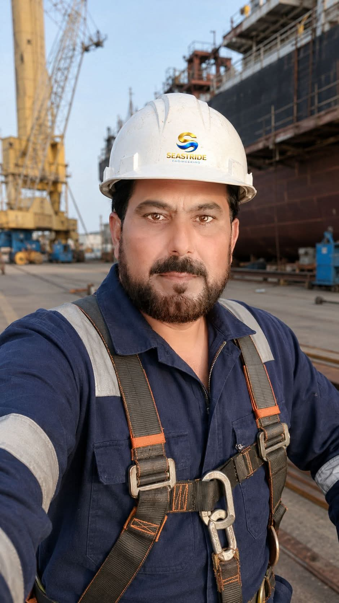

Seastride Engineering is a General Engineering Services company established and incorporated in 2020. Since its inception, the company has been committed to delivering reliable, high-quality engineering and maintenance solutions within the industry.
Seastride Engineering strives to build long-term relationships with its clients by maintaining a reputation based on trust, professionalism, and consistent performance. The company emphasizes strong project management, ensuring that all assignments are completed efficiently, safely, and within the agreed time frame.
With a skilled workforce and a strong focus on safety and precision, Seastride Engineering is dedicated to supporting shipowners, operators, and industries with dependable engineering solutions that help maintain vessel performance and operational integrity.

Seastride Engineering provides engineering and inspection services designed to support industries that rely on safety-critical equipment and infrastructure — covering inspection, testing, maintenance, and certification for marine vessels, cranes, pipelines, tanks, and industrial equipment.



By combining technical expertise with advanced technology, we help organizations ensure their operations remain safe, efficient, and compliant with international standards — from routine equipment inspections to complex engineering evaluations.
At Seastride Engineering, our mission is to deliver reliable and high-quality engineering solutions that support the growth and development of modern industries. Since our establishment, we have remained committed to excellence, professionalism, and innovation in every project we undertake.
Our organization is built on the foundation of strong technical expertise, practical experience, and a dedicated team that continuously strives to meet the evolving demands of industrial sectors. We believe that sustainable progress comes from precision, responsibility, and a deep understanding of our clients' operational needs.
At Seastride Engineering, we aim to create long-term partnerships by providing dependable engineering services, maintaining high safety standards, and ensuring timely project execution. Our focus is not only on delivering results but also on building trust and adding long-term value for our clients.

To become a recognized leader in engineering inspection and technical services by delivering innovative solutions that enhance safety, reliability, and operational efficiency.
To provide professional engineering services that ensure the safety, performance, and longevity of industrial equipment and infrastructure.
Safety First · Technical Excellence · Integrity & Professionalism · Customer Satisfaction · Continuous Improvement